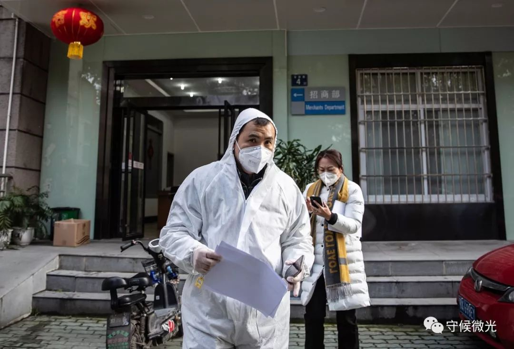
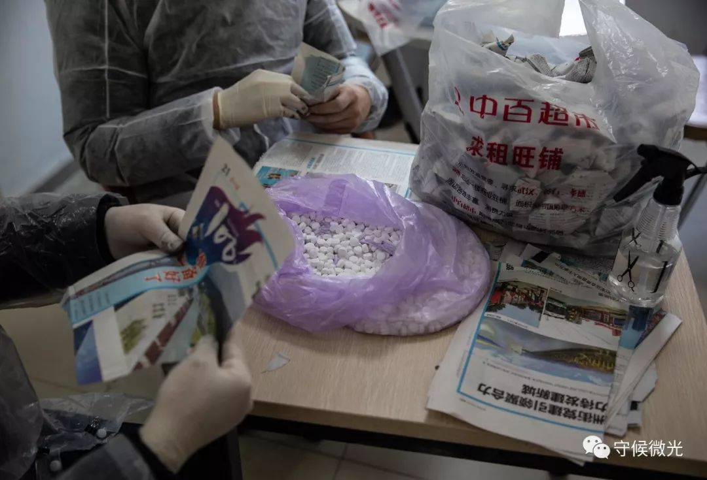
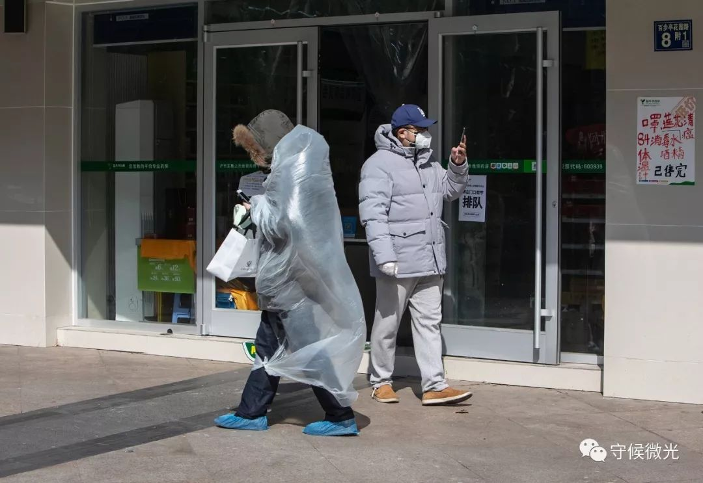
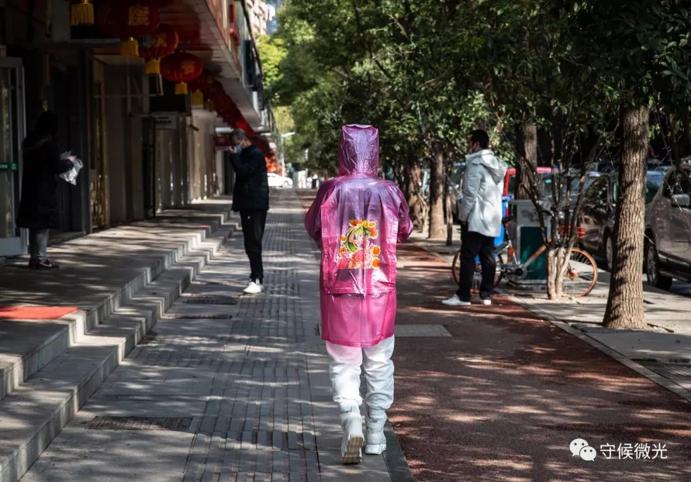
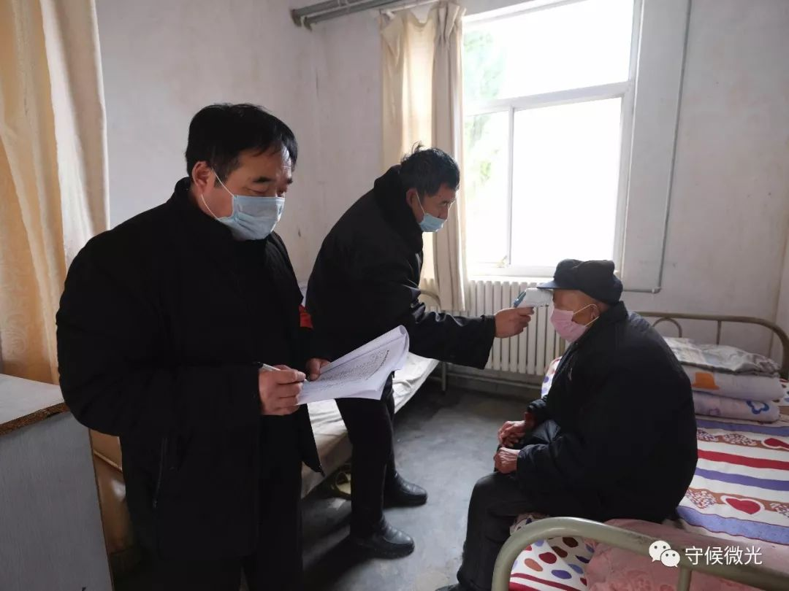
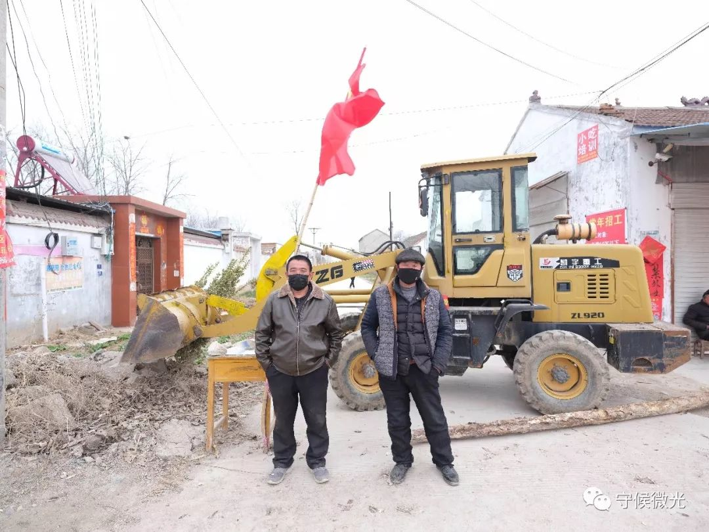
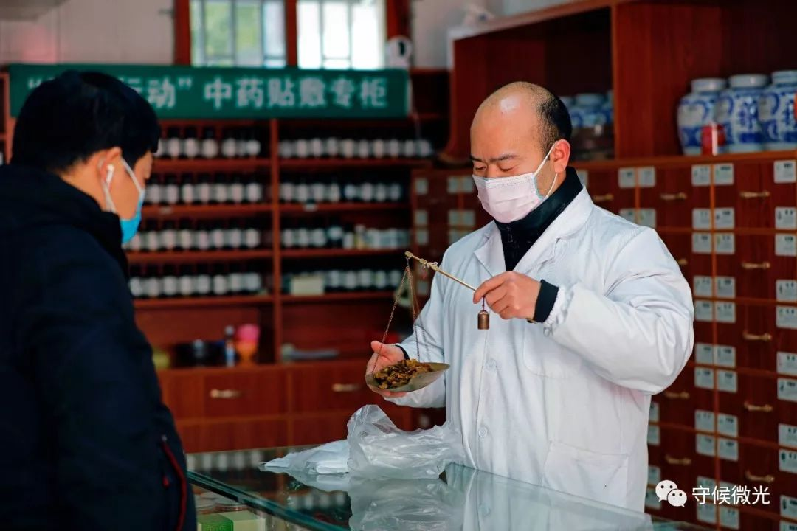
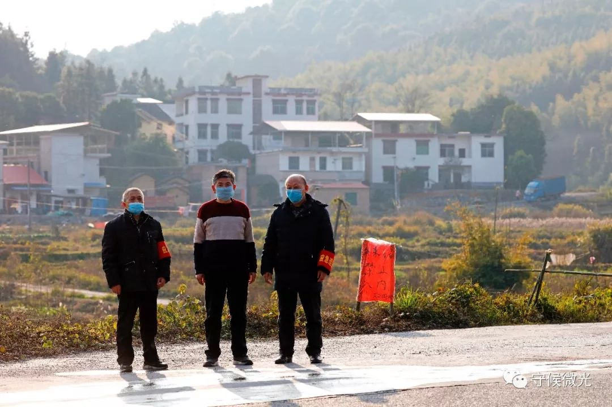

武汉确诊病人被要求自我隔离 求助社区被拒后步行两小时就医 - 经济观察网 － 专业财经新闻网站
原文链接 备份链接 经济观察网 记者 吴小飞 “从家里到中南医院，大概5公里，我走了两个多小时才走到医院，我太难受了，全身肌肉疼，根本走不动……”2020年2月1日，武汉市武昌区市民王勇告诉经济观察网记者，其独自步行就医前，曾多次向所在社 …

2月9日，武汉百步亭社区，接到通知的志愿者司机准备开车送轻症患者去方舱医院。李峥苨/摄

2月9日，武汉百步亭社区三居委会内，工作人员分装消毒泡腾片，准备分发给社区居民。李峥苨/摄
采访|中青报·中青网记者 李峥苨 通讯员 王勇 陈雄鹰
主笔|曲俊燕
2月9日，经历数日阴雨的武汉终于放晴，百步亭社区有居民出门取菜买药，也有人绕着花园慢跑。如果忽略人们脸上的口罩，一切看起来平静得像是日历上任意一个周日。当天，武汉市发起对新冠肺炎疫情防控应收尽收的“总攻”，这个容纳了十几万人的社区被要求在当日24时前，对确诊患者、疑似患者、发热患者、亲密接触者“四类人员”采取相应收治、隔离措施。

2月9日，湖北省委党校振华楼内，一名医务人员与家人通话。这里被征用为新冠肺炎疑似患者的集中隔离点，为了避免传染家人，医务人员将在集中隔离点内集中住宿，疫情解除后，仍需隔离观察14天。王嘉兴/摄

2月8日，武汉百步亭社区三居委会，工作人员通过电话核实社区内“四类人员”的信息和情况。李峥苨/摄
这是一场没有硝烟的战争。“敌人”是看不见摸不着的新型冠状病毒，参与战斗的是每一个呼吸着的人。在“主战场”医院之外，基层社区和乡村成为疫情联防联控的第一线，参与值守或是居家隔离，每个人都深切体会着这场战役的紧迫性。

2月9日，武汉百步亭社区街头，附近的居民从一家药店门前经过。李峥苨/摄

2月9日，武汉百步亭社区街头，一位穿着雨衣防护的居民。李峥苨/摄
河南乡村在这场防疫战中被赋予了“硬核”的形象：村干部全副武装在村口设立劝返点，大喇叭用河南方言循环播放防疫通知，甚至将豫剧选段改编成防疫“顺口溜”……作为全国人口第一大省，南部和湖北接壤的河南在“硬核”背后，更多的是现实的考虑。
“我们的工作就是：本村人不出村，外村人不入村。”河南省永城市刘河镇祖楼村党支部书记陈松说。在刘河镇敬老院，一位年近70的大爷每天背着药箱给全院消毒，一天3次，每次将近1小时。敬老院院长和管理员每天早晚各一次为老人测体温、登记造册。年轻的刘河镇訾楼村党支部书记王上参与防疫至今，已近一个月未回家，他的孩子才8个月大。

2月5日，河南省永城市刘河镇，工作人员到村民家中消毒。王勇/摄

2月5日，河南省永城市刘河镇，医护人员视频指导村民做体温监测。王勇/摄

2月5日，河南省永城市刘河镇敬老院，工作人员给老人量体温。王勇/摄
相隔不远的孙厂村，党支部书记豆玉玲拿着小喇叭挨家挨户宣传，直到嗓子沙哑。她的丈夫孙家顺是孙厂村村医，负责为全村人讲解疫情防控知识、为公共区域消毒。大儿子在某卡点24小时轮值，二儿子在医院发热门诊上班。一家四口都在抗疫一线的岗位上坚守，这个春节对他们来说格外特别。

2月5日，河南省永城市刘河镇孙厂村劝回点。王勇/摄

2月5日，河南省永城市黄口镇严守村口，工作人员对确有事外出的百姓进村出村采取登记、测温、消毒的措施。王勇/摄
在刘河镇郭洼村，村民每天不约而同地来给值守干部送吃的，以表谢意。郭洼村村医李华每天电话回访武汉返乡户和途经湖北的返乡人员。在祖楼村，1月13日从长沙途经武汉返乡的吴霞主动在家隔离14天。“现在14天过去了，俺也不会到处跑，就等着疫情结束的那一天，俺们再收拾行囊出去挣钱。”

2月9日，河南省永城市刘河镇倪阁村村民在自家的麦地里挖野菜，由于外出务工的延期，村里人都隔离在家，每天有一小时外出买菜的时间。王勇/摄

2月5日，河南省永城市刘河镇，劝返点旁的两位村民。王勇/摄
距武汉600多公里的资兴市是湖南省的一个县级市，人口不到40万。截至2月11日24时，资兴市共有新冠肺炎确诊4例。确诊人数不多，但全市仍以高度戒备来应对：1月25日至30日，对市内所有农贸市场进行休市、消毒，重点针对活禽、肉类等区域；1月29日起，全市禁止外来车辆人员进入，市民从外地归来需测量体温；2月7日起，开始对村子和社区实行封闭式管理。
2月10日，湖南省资兴市唐洞街道晋宁路，一辆防疫消毒雾炮车在路上作业。陈雄鹰/摄

2月9日，湖南省资兴市唐洞街道工作人员在资五路值守，他们已经在这里工作了十几天。陈雄鹰/摄

2月10日，湖南省资兴市文化旅游广电体育局的门卫对进入机关院内的人员测量体温。陈雄鹰/摄

2月10日，湖南省资兴市的一家诊所里，医生唐曹龙在给一名顾客称中药。陈雄鹰/摄

2月10日，湖南省资兴市，街边卖菜的老人。陈雄鹰/摄
去年冬至前后，在未受疫情影响时，资兴市三都镇辰南村还举行了一场热闹的“杀猪饭”宴席，吸引了400余名游客和村民。这本是当地冬至到小年前的年俗，象征着劳动丰收和亲朋情谊。如今，村庄里四处静悄悄，没什么人员往来，拜年改在电话和微信上进行。这种反差不仅是在资兴，疫情之下，全国的村庄都保持着克制。

2月5日，湖南省资兴市唐洞街道田心村文家组的入口已封闭，一名老人将垃圾桶拖到远离村口的垃圾箱。陈雄鹰/摄

2月5日，湖南省资兴市蓼江镇秧田村，村秘书袁辰岗站在新冠肺炎疫情防控检查点旁。陈雄鹰/摄

1月31日，湖南省资兴市蓼江镇大坪组的劝返告示。陈雄鹰/摄

2月5日，湖南省资兴市东江街道文昌村，几名从城区来的市民戴着口罩在菜地里采摘蔬菜。陈雄鹰/摄

1月31日，湖南省资兴市唐洞街道驻村干部和村干部在各组路口设卡，劝返外来人员。陈雄鹰/摄
很多人开玩笑说：在家躺着也能为社会做贡献，这还是第一回。作为防疫体系的“最后一公里”，社区和乡村治理面临的任务细碎、繁杂，需要每个人的耐心和自觉。等到疫情结束时，我们期待，摘下口罩迎接的不仅是新鲜空气，还有在数月团结抗疫中树立的全民卫生安全意识。
编辑 | 孔斯琪
中国青年报·中青在线出品
微信编辑 | 陈轶男

觉得好看请点这里
原文链接 备份链接 经济观察网 记者 吴小飞 “从家里到中南医院，大概5公里，我走了两个多小时才走到医院，我太难受了，全身肌肉疼，根本走不动……”2020年2月1日，武汉市武昌区市民王勇告诉经济观察网记者，其独自步行就医前，曾多次向所在社 …
原文链接 备份链接 *************▲*************北京地坛医院是北京市新冠肺炎定点治疗医院，2020年2月3日，一名护士走过张贴着护士生活照的走廊。 （新华社/图） 全文共2934字，阅读大约需要7分钟。 于 …
原文链接 备份链接 凤凰新闻客户端 凤凰网在人间工作室出品 1月22日，有一个叫卓明灾害信息服务中心的团队成立了nCoV志愿者联盟，发起人是我的朋友。 在这个大志愿者联盟里，有300多个在线医生，组成了一个综合各科在线治疗的团队；微信 …
原文链接 备份链接 伴随着火神山、雷神山医院开始收治病人，15家方舱医院陆续启动， 各省医疗队开赴武汉，武汉所有确诊患者与疑似病例都将“应收尽收”。 在人类抗击疫病的历史上，“武汉会战”已成为一场史无前例的超级行动 图/新华、中新 武汉 …
原文链接 备份链接 “时间就是生命，收治工作刻不容缓，必须争分夺秒，全力以赴救治患者。”近日，中央赴湖北指导组就新冠肺炎防治连续发出指示，要真正做到应收尽收、不漏一人。 然而，记者了解到，武汉的社区和医院仍处于过载状态，许多无法得到及时救 …